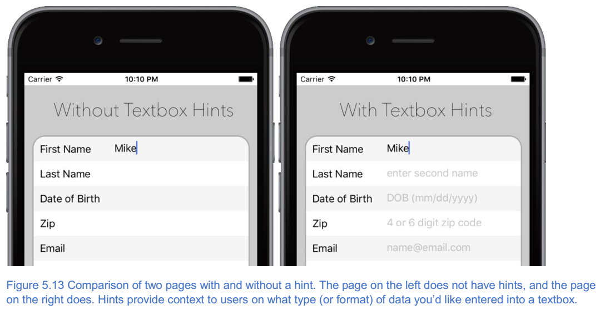

6. 理解app布局的基础¶
本章涵盖
- 为什么应用程序的设计与其功能相匹配非常重要；
- 如何使用堆栈布局组织和布局
NativeScript应用的用户界面（UI）； - 如何使用常见的
UI元素（标签，按钮和文本框）； - 如何使用滚动视图创建可滚动页面；
在第4章中，您学习了如何使用 XML 和 JavaScript 代码在 NativeScript 应用程序的页面之间导航。您还开始为 Tekmo 公司创建一个移动应用程序。在本章中，您将继续完善 Tekmo 的应用程序，同时了解 UI 布局。
6.1. 理解NativeScript布局¶
仅为您的应用创建页面并在它们之间导航是不够的。移动应用程序开发也是为了创造引人注目的用户体验来实现目标。 这意味着您需要以不同的方式呈现和组织您的用户界面，具体取决于您的应用的用户所做的事情。
例如，假设您设计了一个带有仪表板的健身应用程序，显示您每天的运动量，类似于图5.1所示的 fitbit 应用程序。

仪表板上有几个不同的图表和图表，显示您的日常进度。图表和图形在屏幕上以不同的方式呈现，以吸引用户的眼球，首先引起对最重要数据的关注（您的步数）。在不同的页面上，用户填写个人资料，包括姓名，出生日期，身高，体重和健身目标。由于配置文件页面上显示的信息不同， UI 元素排列在垂直堆栈中。
目前，使用这些不同的组织布局设计移动应用程序可能看起来令人生畏，但不用担心。在本章和后面的章节中，您将学习如何组织 UI 元素。实际上， NativeScript 使用一组称为布局的UI元素轻松组织您的用户界面。
注解
布局是一种特殊的 UI 元素，用于指导和通知您的应用程序如何在移动设备的屏幕上组织其他 UI 元素。如果你想要一个按钮在屏幕的底部停靠（或始终显示），或者如果你想在网格状的行和列集合中组织几个按钮，那么可以使用布局来帮助你。
因为 NativeScript 布局是 UI 元素，所以它们是用 XML 定义的。虽然我将布局称为 UI 元素，但在加载页面时，它们不会显示在移动设备的屏幕上。相反，它们会影响放置在布局中的 UI 元素的位置和排列。由于布局将包含其他 UI 元素，因此它们被称为布局容器。
在清单5.1中，我已经包含了一个 Stack Layout 和几个嵌套的 UI 元素。 您将在一会儿了解堆栈布局，因此您可能不用理解堆栈布局现在如何工作，但请注意，将 UI 元素放置在布局容器中时，它们将以各种方式（根据其容器的规则）排列并显示在移动设备屏幕上 。
清单5.1具有多个UI元素的Stack Layout容器
<StackLayout> //堆栈布局是一个UI元素，但不会显示在屏幕上
<Button text="Everything is awesome..." /> //按照堆栈布局强加给它们的规则，将显示堆栈布局元素中包含的UI元素
<Button text"="when you’re using NativeScript!" />
</StackLayout>
总共有五种不同的布局： stack layout (堆栈布局), grid layout (网格布局), wrap layout (包装布局), dock layout (码头布局), 和 absolute layout (绝对布局)。
NativeScript 提供几个不同的布局容器，允许你在你想要的位置精确地放置你的 UI 组件。
Absolute Layout允许你用X-Y坐标放置元素。这个在你要把元素放到特别的位置时很有用，比如要在app的左上角显示一个activity indicator widget（动态指示小挂件）。Dock Layout用于放置UI元素到外层边框。例如，一个停靠在屏幕底部的容器会是显示广告的好位置。Grid Layout让你把你的界面分割成若干行和列，比较类似HTML里<table>干的事情。Stack Layout让你横向或纵向堆码UI子组件。Wrap Layout当一行或列填满时子组件顺应到下一行或列。
我不打算详细讨论所有布局，而是关注构建前几个应用程序时使用的最常见布局：堆栈和网格。您将在本章中了解堆栈布局，以及第6章中的网格布局。
注解
您创建的每个 NativeScript 应用程序页面都会有一个布局，但您并不局限于在页面上使用单个布局。在后面的章节中，我将向您展示如何通过将两个或更多布局嵌套（或梳理）在一起来构建更复杂的 UI 。
小技巧
关于布局容器的 NativeScript 文档是非常好的资源：
https://docs.nativescript.org/ui/layout-containers 。 所有五个布局的解释是一个很好的快速参考指南。
6.1.1. 布局和屏幕像素¶
在您了解布局时，了解 NativeScript （以及大多数移动设备）如何在屏幕上显示 UI 元素的一些基本知识非常重要。在第3章中，您了解了屏幕分辨率和 DPI 。
注解
屏幕分辨率是屏幕上像素数的度量，通常以宽度x高度的形式进行描述。例如，屏幕分辨率为 640x480 意味着屏幕宽度为640像素，高度为480像素。
注解
每英寸点数（DPI）是移动设备屏幕上点（或像素）密度的度量。在移动应用程序中，它用于描述沿宽度或高度出现在屏幕一英寸内的像素数量。大多数设备在水平和垂直方向都具有相同的 DPI ，因此 DPI 被描述为单个数字。 例如，400 DPI将意味着每行和每列像素中存在每英寸 400 像素。
尽管移动设备具有不同的屏幕分辨率和 DPI ，但所有设备都具有以像素的行和列组织的矩形屏幕。屏幕上的每个像素可以通过使用（X，Y）的坐标进行参考， X 代表屏幕左侧的像素数量， Y 代表屏幕顶部的像素数量。

图5.2显示了如何通过（0，0）的坐标来引用最左边的顶部像素。类似地，可以使用坐标（3,4）参考第四列和第五行中的像素。
注解
您会注意到屏幕上的第一行和第一列是使用数字零来引用的。您可能很熟悉这种从零而不是1的做法。
当您使用 NativeScript 布局来组织 UI 元素时，您不会花大量时间思考单个像素（首先）。但是，当您了解每种布局时，使用屏幕坐标来引用像素是解释 NativeScript 如何在屏幕上放置 UI 控件的简单方法。当您使用 CSS 开始样式化应用程序时，您还将使用本书后面介绍的有关屏幕坐标的概念。
6.2. 堆栈布局¶
在本章前面，您了解到，位于布局容器内部的 UI 元素根据关联容器的规则排列在屏幕上。清单5.2和图5.3显示了您之前在代码和移动设备上看到的相同堆栈布局。
清单5.2具有多个嵌套UI控件的Stack Layout容器
<StackLayout>
<Button text"="Everything is awesome..." />
<Button text"="when you’re using NativeScript!" />
</StackLayout>
就如其名称一样，堆栈布局通过将每个子元素“堆叠”在彼此之上来组织它的嵌套 UI 元素。当两个按钮放置在堆栈布局的内部时，它们将按照它们在 XML 中出现的顺序放置在屏幕上。 NativeScript 在幕后执行了很多操作，使按钮显示在堆栈中，而细节并不重要。但是，在高层次上，堆栈布局中包含的每个 UI 元素都会依次放置在屏幕上。第一个带有 "Everything is awesome ..." 文本的 Button 被放置在屏幕的顶部，然后第二个 Button 被放置在屏幕的下方。
小技巧
堆栈布局是 NativeScript 应用程序中最常用的布局容器，我发现自己在任何地方都使用它们。在大多数页面上，我添加的第一个 UI 控件是一个堆栈布局。在继续了解其他布局容器并了解应该使用哪种布局时，请从堆栈布局开始。
6.2.1. 使用堆栈布局将内容添加到Tekmo应用程序¶
现在您已经学会了如何使用堆叠布局，让我们继续构建 Tekmo 应用程序。在第4章中，我创建了 Tekmo 应用程序并添加了两个页面： Home 和 About 。 我还从主页添加了基本导航到 About 页面。在本章中，我将添加第三页“联系我们”，并使用其他 UI 元素充实“关于我们”页面。图5.4显示了本章其余部分我将要构建的内容。您可以按照步骤逐步构建每个页面，也可以通过 https://github.com/mikebranstein/TheNativeScriptBook 从 Github 下载完整代码列表。
6.2.1.1. 将内容添加到关于我们的页面¶
在第4章中，我在关于我们页面上添加了关于 Tekmo 公司的简要概述，如清单5.3和图5.5所示。
清单5.3在第4章中创建的 About Us 页面，它简要介绍了 Tekmo 公司
<Page>
<StackLayout>
<Label text"="Small company that wants to bring you..." textWrap"="true" />
<Label text"="Come visit us in Louisville, KY" />
</StackLayout>
</Page>

在 HTML 应用程序中，关于我们的页面通常有一个标题，一个任务声明和一段较长的文字，告诉访客关于公司的历史。我将通过在现有堆栈布局中添加更多的标签来将其中一些元素添加到 Tekmo 应用中。清单5.4显示了添加的附加 Label 元素。然后图5.6显示关于我们页面的完整布局。
清单5.4添加到 About Us 页面的标题，任务说明和公司历史记录
<StackLayout>
<Label textWrap"="true" text"="About Us" />
<Label textWrap"="true" text"="Tekmo is a small online retailer..." /> //文本已被截断，如图5.5所示
<Label textWrap"="true" text"="Our Mission" />
<Label textWrap"="true" text"="We exist to "" />
...
</StackLayout>

现在我已经在“关于我们”页面添加了更多文字， Tekmo 应用程序真的开始运行啦。但是有一些容易被忽略的细微之处。查看关于我们页面的底部（图5.7），您会注意到一些文本正在屏幕底部滚动。
在第4章中，您学习了如何通过使用 Label 元素的 textWrap ="true" 属性横向滚动页面的文本，但现在文本是垂直滚动页面，让我们学习如何解决这个问题。
6.2.2. 滚动页面¶
在移动设备上，当屏幕内容从屏幕底部滚动时，您的自然倾向是滑动屏幕并移动内容。但请等待：如果您尝试在 Tekmo 应用程序的“关于我们”页面上滑动屏幕，则不会发生任何事情。默认情况下， NativeScript 页面不允许您轻扫并滚动内容。要启用滚动功能，您需要使用滚动视图 UI 元素。
小技巧
要允许页面内容可滚动，请将滚动视图添加到页面。
滚动视图就像布局，因为它们不显示在页面上，而且它们是容器对象。清单5.5和图5.8显示了 Tekmo 应用程序关于我们页面上的滚动视图。
列表5.5使用滚动视图的关于我们页面，允许通过滑动屏幕来滚动其内容
<Page>
<ScrollView> //滚动视图是页面上的第一个UI元素
<StackLayout> //可滚动的UI代码放在这里，从我们的布局容器和内容开始
... #B
</StackLayout> #B
</ScrollView>
</StackLayout>
</Page>
为了使页面的内容可滚动，滚动视图元素应该是添加到页面的第一个元素。在滚动视图内部，您应该放置堆叠布局及其嵌套元素。如图5.8所示，一旦添加了滚动视图，您可以使用手指轻扫并滚动页面内容。
小技巧
将滚动内容添加到应用程序时请注意用户体验！不要在较小的屏幕设备上滚动页面的子集。不要将所有滚动内容（除非应该）放在较大的平板电脑上。如果您想了解更多关于用户界面和应用体验设计的内容，请查看 https://developer.apple.com/ios/human-interface-guidelines 上的 iOS 人机界面指南或 https://developer.android.com/design 上的 Android 设计指南。
将滚动视图添加到页面时，不必将滚动视图放置在页面的顶部。 实际上，可以在页面内容的一部分放置滚动视图。例如，假设你有一个像新闻文章那样设计的页面，如图5.8所示。页面顶部的大标题占据屏幕总高度的大约50％。屏幕的剩余50％包含文章文字。

在此页面上，您可以在整个页面或文章文本周围放置滚动视图。但是哪个选择是对的？可能没有正确的选择，但我建议让整个页面滚动。为什么？我的回答来自更多的感觉而不是逻辑。移动应用程序具有良好的用户体验，而且我相信如果仅仅将文章文本滚动，就会让我的手指滑动手势受到限制，特别是在较小的手机上。当滚动时，我通常喜欢用我的手指进行大范围的扫描，或者适度地长时间快速地弹奏。如果可滚动空间太小，则较宽的笔划不会感觉自然。所以，在较小的屏幕上，滚动整个页面是有意义的。
但是更大的平板电脑屏幕呢？在平板电脑上，由于屏幕尺寸较大，文章标题会占用较少的垂直空间，为文章文字留下更多空间。由于文章文字有更多空间，因此我只会滚动文字，并始终在页面上留下标题。
请记住，关于在哪里以及如何使用滚动视图没有正确或错误的答案。然而，一旦您在真实设备上测试您的应用程序后，更改在页面上使用滚动视图的方式很常见。
小技巧
在物理设备上测试您的应用。 这是您能够判断您的设计选择是否有效的唯一方法。
小技巧
不要成为唯一一个在物理设备上测试您的应用的人。作为应用程序的开发人员，您的朋友或同事会立即注意到的微妙之处。将您的应用程序安装在朋友的手机上或在办公室周围传递手机以获取反馈。
现在您已经学会了如何向页面添加文本，将文本包装为多行，并确保您的页面内容可以滚动。您将在后面的章节中学习如何改变页面的样式。如果您无法遵循，列表5.6包含关于我们页面的完整代码（长行被截断）。
清单5.6完成 Tekmo 应用程序关于我们的页面代码
<Page>
<ScrollView>
<StackLayout>
<Label text="About Us" />
<Label textWrap="true" text="Tekmo is a small online..." />
<Label text="Our Mission" />
<Label textWrap="true" text="We exist to bring..." />
<Label text="History" />
<Label textWrap="true" text="In the early 90's, it all..." />
<Label textWrap="true" text="After Rescue Pups, it was..." />
<Label textWrap="true" text="As we grew older, the games..." />
<Label textWrap="true" text="After many year, we all started..." />
<Label textWrap="true" text="We remembered how cool it was to..." />
<Label textWrap="true" text="And then there was Vampire..." />
<Label textWrap="true" text="Lastly, Super Marshmallow Man..." />
</StackLayout>
</ScrollView>
</Page>
6.2.3. 使用文本框并让用户提供反馈¶
我要处理的 Tekmo 应用程序的下一页是联系我们页面。在 HTML 应用程序中，“联系我们”页面允许访问者发送消息或请求其他信息。在本节中，您将学习如何使用文本框和按钮来创建用户界面，以便通过应用程序联系 Tekmo 。
让我们开始并通过在应用程序视图文件夹下创建一个名为 contact-us 的文件夹，将联系我们页面添加到 Tekmo 应用程序。图5.10显示了这个文件夹以及相应的 XML 和 JavaScript 页面文件。
警告
./images/5-10.png
在我开始向联系我们页面添加文本框和按钮之前，让我们回顾列表5.7中的 XML 代码。现在您已经了解了滚动视图，堆栈布局和标签元素，我已将它们添加到页面中。
清单5.7添加了 ScrollView 的联系我们页面
<Page>
<ScrollView>
<StackLayout>
<Label textWrap="true" text="Contact us by submitting a message below." />
<StackLayout>
</ScrollView>
</Page>
在联系我们页面上，我想让用户输入消息主题和消息正文。一旦他们输入了这些信息，他们应该能够通过按下按钮将消息提交给 Tekmo 。
6.2.3.1. 将 TEXTBOX 添加到联系人页面¶
就像在 HTML 应用程序中一样， NativeScript 应用程序具有称为文本字段和文本视图的文本框 UI 元素。
注解
文本字段是单行文本框，类似于 type ="text" 的 HTML input 元素。要向页面添加文本字段，可以使用 <TextField /> XML 元素。
注解
文本视图是一个多行文本框，就像一个 HTML textarea 元素。要将文本视图添加到页面，可以使用 <TextView /> XML 元素。
当你设计你的用户界面时，提前知道你想显示的文本框应该是单行还是多行是很重要的。联系我们页面将使用文本字段和文本视图，如列表5.8和图5.11所示。
列表5.8添加了一个文本字段和文本视图的联系我们页面
<StackLayout>
<Label textWrap"="true" text"="Contact us by submitting a message below." />
<Label text"="Subject" /> //您应该在每个文本框前添加描述性文本，以便用户知道要在每个文本框中放置什么内容
<TextField /> //消息主题的单行文本框
<Label text"="Body" />
<TextView /> //消息正文的多行文本框
</StackLayout>

将文本字段和文本视图添加到应用程序时，应该告诉用户每个输入框的目的。这样做的一种方法是在文本框附近放置一个标签。在清单5.8中，我在每个文本框的上方放置了一个 Label ，让我的用户知道应该使用第一个文本框输入消息主题，第二个文本框应该用于输入消息正文。
尽管将标签放在文本框附近可能是传达文本框意图的有效方式，但这种方法可能无效（尤其是在 iOS 上）。在 iOS 平台上，文本框没有任何视觉提示来告诉用户文本框存在。 以图5.12为例：您能否告诉主题和正文标签下面有一个文本框？ 我也不能！
因为在屏幕上可能很难看到文本框，所以我非常有目的地确定了文本框的识别方式。我描述文本框的目的的首选方法是使用提示，如图5.13所示。
注解
提示是一种告诉 NativeScript 将文本临时放置在文本框内的方法，只要用户没有在文本框中键入文本即可。 例如，如果文本框提示是“输入主题”，则文本“输入主题”将出现在空白文本框中。当您点击文本框输入文本时，临时文本“输入主题”消失，以便您输入。在文本框中输入文本将删除临时文本。删除您在文本框中输入的所有文本将再次显示临时文本“输入主题”。要设置文本框提示，请将提示属性添加到 TextField 或 TextView ： <TextField hint= "输入主题" /> 或 <TextView hint = "输入消息" /> 。
小技巧
提示是使应用程序更易于使用的一种微妙方式。提示的两种常用用途是描述应该在文本框中输入什么内容（例如，“输入主题”）并描述输入到文本框中的文本的预期格式（例如，用于电子邮件的 name@domain.com 地址）。
小技巧
如果您有效地使用提示，您通常可以从您的用户界面中删除描述性标签。通过这样做，应用程序可能看起来不那么混乱，并且更具视觉吸引力。
提示可以是强大的 UI ，不仅使您的网页更易于使用，而且更具视觉吸引力。是的，“视觉吸引力”完全是主观的，但我宁愿使用一个应用程序，它指示并正确引导我使用它，而不是猜测在哪里以及如何输入数据。
因为这是一个好主意，所以我会给 Tekmo 应用的联系我们页面添加提示。清单5.9和图5.14显示了我如何使用提示为应用程序用户提供应该输入主题和正文文本框的信息。我还删除了每个文本框上方的描述性标签元素，因为这些提示为用户提供了足够的内容。
清单5.9在联系我们页面中使用提示而不是描述性标签
<StackLayout>
<Label textWrap"="true" text"="Contact us by submitting a message below." />
<TextField hint"="Enter the subject..." /> //提示可以为用户提供有关文本框预期用途的信息，同时还允许您删除描述性标签
<TextView hint"="Enter the message..." />
</StackLayout>

尽管您已经了解了文本字段和文本视图的基础知识，但您还可以使用更多的属性，例如作为 NativeScript 开发人员提供的 hint 属性。本章无法全面介绍这些内容，但在本书中您将更多地了解这些文本框。如果您想现在了解更多信息，请通过 https://nativescript.org 阅读详细的 API 文档。
6.2.3.2. 向联系人页面添加提交按钮并让用户提供反馈¶
用户在“联系我们”页面的文本框中输入邮件主题和正文后，通常会为用户提供一种实际向您发送信息的方式。正如大多数 HTML 应用程序允许您通过按下按钮提交信息一样，我希望 Tekmo 应用程序的用户通过在应用程序内按下提交按钮来提交他们的消息。 在清单5.10和图5.15中，我已经为堆栈布局添加了一个按钮。
清单5.10在联系我们页面添加一个按钮来提交消息主题和正文
<StackLayout>
<Label textWrap"="true" text"="Contact us by submitting a message below." />
<TextField hint"="Enter the subject..." />
<TextView hint"="Enter the message..." />
<Button text"="Submit" tap"="onTap" /> //当你点击提交按钮时，一个名为“onTap”的函数将被NativeScript调用。
</StackLayout>

您已经在第4章学习了按钮和按钮的轻击事件，所以您应该识别列表5.11中的轻敲事件处理程序定义。你可能还不熟悉的是 onTap() 函数的主体。理想情况下，我会通过电子邮件或向服务器发送消息将输入的信息发送到 Tekmo ，但我会故意跳过“发送”部分。我将在未来的章节中重温发送数据和消息的方式，这样你就不会错过任何一次。但现在，我会假设消息已发送，并通知用户它已成功发送。让我们在清单5.11中仔细看看它。
代码清单5.11点击提交按钮时发送用户提供反馈
var dialogsModule = require("ui/dialogs");// 为了向用户提供已点击该按钮的反馈，请加载“ui / dialogs”模块，该模块包含一个警报对话框以向用户显示消息。
function onTap(args) {
console.log("submit button tapped");// 在您的前几个应用程序中，留下一些面包屑来调试行为不当的应用程序是一个不错的主意。 将消息记录到控制台是执行此操作的简单方法。
dialogsModule.alert("Your message has been sent.");// 通过显示带有自定义消息的警报对话框向用户提供视觉反馈。 如果我们将代码发送到服务器的电子邮件或消息，它会直接出现在此警报之前。
}
exports.onTap = onTap;
小技巧
您可能已经注意到 onTap() 事件处理函数名称不是非常具有描述性。我们建议使用像 onSubmitTap() 这样的命名约定，以便您的代码更具可读性。
尽管之前您已经看到了 tap 事件处理程序，但我已经介绍了几个新概念。有很多事情要做，但不要惊慌。我们先从 onTap 函数的第一行开始介绍，然后回到顶部并了解我介绍的新模块。
onTap 函数的第一行引用了一个名为 console 的变量。乍一看，你可能会感到困惑，因为我的代码中没有声明控制台变量。那么你说得对，我没有声明控制台变量。但是，这很好，因为控制台是全局 NativeScript 变量。让我解释。
在开发 NativeScript 应用程序（或任何应用程序）时，通过留下诊断消息（或面包屑）来测试应用程序通常是个好主意。通过这样做，当出现问题时，您可以重新跟踪您的步骤。 NativeScript 提供了一个名为 Console 的专用模块，它为您提供了将诊断数据和消息输出到 Android 模拟器和 iOS 模拟器的方法。
注解
在 Android 模拟器和 iOS 模拟器中运行应用程序时，使用控制台模块记录的消息和数据将显示在终端或命令提示符处。
正如您在第4章中学到的，要使用 NativeScript 模块，您需要使用 require() 语法导入它。但是，因为几乎每个页面上都会使用 console 模块，NativeScript 会自动将它加载到名为 console 的全局变量中。
小技巧
广泛使用控制台模块通过输出消息和关键事件来测试您的应用程序。即使你不认为你需要这些信息，但我保证你在将来尝试调试你的应用时会感谢它。
既然您已经理解了控制台模块的用途，那么 onTap 函数的第一行就更清晰了。我正在使用控制台模块将诊断消息记录到仿真器/模拟器。
让我们回顾一下在列表5.11的第一行介绍的另一个新模块： var dialogsModule = require("ui/dialogs") 。 该命令导入对话框模块。
注解
Dialog 模块为您提供了一系列对话框，为用户提供视觉反馈，通常是为了响应用户执行的操作。虽然有许多不同类型的对话框以不同的方式查看和操作，但是所有对话框在屏幕上显示时都有三个共同点：标题（或标题），消息和一个（或多个）按钮，以提示用户确认消息，关闭对话框或执行其他操作。
注解
警报对话框是一种显示简单消息和单个按钮的对话框。按下按钮可关闭警报。警报对话框类似于 HTML 应用程序中的 JavaScript alert() 消息。
为了更好地理解 Dialog 模块，您可以了解 dialogsModule.alert("..."); 如何显示一个对话框，提醒用户他们的消息已发送到 Tekmo 。图5.16显示了如何向用户显示警报对话框，当点击提交按钮时提供视觉反馈。

小技巧
向用户提供与应用交互时的反馈是移动应用开发的一个重要方面。在移动应用程序中向用户提供反馈的方式有很多种：声音，振动和视觉效果。
有时，某些形式的用户反馈会比其他形式更好。在本书中，我不会详细讨论哪种形式的用户反馈最好（以及为什么）。但是，我确实感到不得不教你，向用户提供反馈非常重要。在本书后面，您将了解 Dialog 模块的其他方面以及向用户提供反馈的其他几种机制。敬请关注！
6.2.3.3. 联系我们页面的完整代码列表¶
我已经完成了将 UI 元素和 JavaScript 代码添加到 Tekmo 应用程序的“联系我们”页面。如果您无法遵循，列表5.12和5.13包含联系我们页面的完整 XML 和 JavaScript 代码。
清单5.12联系我们页面的完整 XML 代码清单
<Page>
<StackLayout>
<Label textWrap"="true" text"="Contact us by submitting a message below." />
<TextField hint"="Enter the subject..." />
<TextView hint"="Enter the message..." />
<Button text"="Submit" tap"="onTap" />
</StackLayout>
</Page>
清单5.13联系我们页面的完整 JavaScript 代码清单
var dialogsModule = require("ui/dialogs");
function onTap(args) {
console.log("submit button tapped");
dialogsModule.alert("Your message has been sent.");
}
exports.onTap = onTap;
现在你已经掌握了堆栈布局，你已经准备好了一些更高级的布局技术。在第6章中，您将继续了解布局容器。我还会继续在 Tekmo 应用程序上进行构建，请继续阅读！
6.3. 总结¶
在本章中，您了解到：
- 堆栈布局允许您通过将它们堆叠在一起来组织
UI元素； - 虽然文本字段和文本视图都是文本框，但文本字段是单行文本框，文本视图是多行文本框；
- 滚动视图可用于向页面的
UI添加滚动条； - 要调试您的应用程序，您应该使用控制台模块将消息和数据记录到终端或命令提示符；